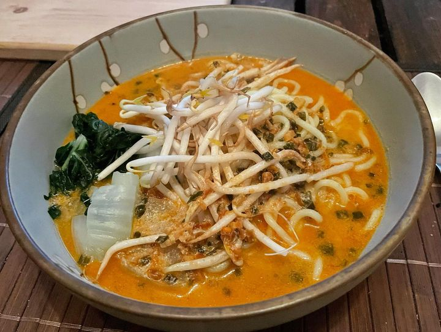

| Hobbies | Contact |
| Hobbies | Contact |
While my job is a huge part of my life, there is definitely more to me than just being a designer and (hopefully soon to be) web developer.
So here are some things you might want to know about me

I'm a passionate gamer and enjoy fantasy video games a lot.
My favourite games at the moment are:
I absolutely love cooking, especially Japanese and Korean food. Since I'm vegan, I often try to figure out how to substitute ingredients without loosing the original flavour.
If you want to check out what I cook, jump over to my Instagram and have a look.
Also, here's some ramen I made:

I have always been an artistic person. I started drawing as soon as I was able to hold a pencil. And I have done so ever since. That's also the reason I chose to study design and work as a designer.
Also, I recently started learning soapstone carving. If you are interested in what I make, follow my TikTok Account where I will be uploading sculpting videos